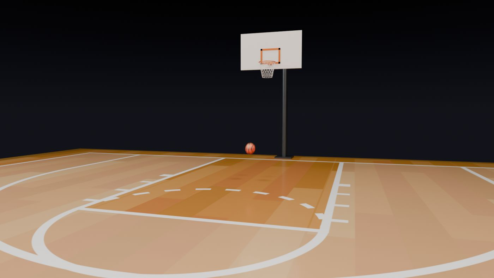
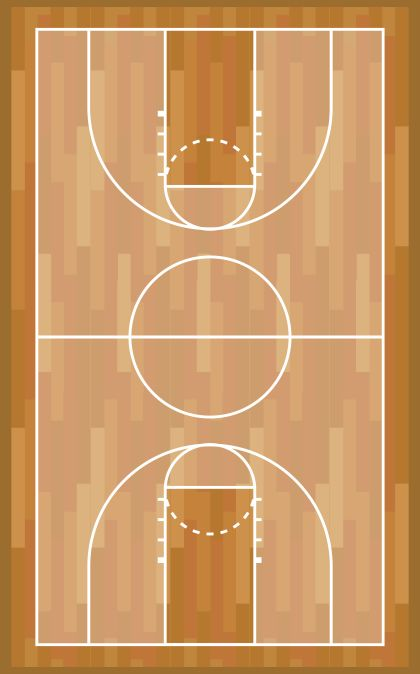

Basketball court and bouncing ball
A regulation-size court with two hoops under arena lights. The ball sits still, is thrown up to the rim, drops and bounces to a stop.

What's in the scene
| Collection | Objects |
|---|---|
| Basketball Court › Court | Court_Floor |
| Basketball Court › Ball | Basketball (animated) |
| Basketball Court › Hoop_North | Hoop_North (empty) with Pole, Base, Arm, Backboard, TargetSquare, Bracket, Rim, Net |
| Basketball Court › Hoop_South | the same, turned to face the other way at the other end |
| Arena Lights | 8 overhead panels, Rim_Left, Rim_Right, Camera_Fill |
| Collection | Camera, and a Sun named Light (hidden from renders) |
Step 1 · Set up the file
- Start Blender › General. Click the default cube, press X › Delete. Keep the Camera and the Light.
- File › Save As into projects/01-basketball/ as
basketball_court.blend. - Copy the two texture folders into 01-basketball/assets/textures/: basketball-wooden-court-sport-game/51439.jpg and basketball-ball/basketball-ball.jpg.
- Check the Scene tab › Units: Metric, Unit Scale 1.0, Length Meters (the defaults).
- Optional helper: select the Light, in its Data tab change it to Sun, Strength 3.5, and click its camera icon in the Outliner so it doesn't render. It just keeps the Solid view readable while you work.
Step 2 · The court floor
- Add › Mesh › Plane. Rename it
Court_Floor. - In the Sidebar (N) › Item, set Dimensions X 19.122, Y 30.685. Then Ctrl+A › Scale.
- Material tab › New, rename it
Court_Wood. Click the dot beside Base Color › Image Texture › Open › 51439.jpg. - Set Roughness 0.35, open Coat and set Weight 0.4, Roughness 0.12.
- Press Z › Material Preview to see it.

Step 3 · The ball
- Press Shift+C to centre the cursor. Add › Mesh › UV Sphere. In Adjust Last Operation set Segments 48, Rings 24, Radius 0.12, Location (0, 6.935, 0.12).
- Rename it
Basketball. Right-click › Shade Smooth. - New material
Basketball_Rubber, Roughness 0.55. Build the nodes below in the Shading workspace.
Nodes: Basketball_Rubber
- Texture Coordinate › Generated → Separate XYZ
- Combine XYZ: X ← Separate X, Y ← Separate Z, Z = 0
- Mapping: Location X 0.167, Scale X 0.667 (Y and Z stay 1) → Image Texture basketball-ball.jpg (sRGB)
- Image Color → Principled Base Color, and → Bump Height (Strength 0.15, Distance 0.002) → Principled Normal
Step 4 · Build one hoop
A hoop is eight simple shapes held together by an empty. Build the north hoop, then copy it. All positions are world positions; type them into the Sidebar.
- Add › Empty › Plain Axes at (0, 12.008, 3.05), named
Hoop_North. This point is the centre of the rim, which is 3.05 m (10 ft) above the floor. - For each part below: add the primitive, set its settings in Adjust Last Operation, then type its Dimensions or Location, apply the scale for cubes, rename it, and give it its material.
| Part | Primitive and settings | Size (m) | Centre (m) | Material |
|---|---|---|---|---|
| Hoop_North_Pole | Cylinder, 24 vertices | r 0.1, depth 3.5 | (0, 14.708, 1.75) | Hoop_Pole_Metal |
| Hoop_North_Base | Cube | 0.6 × 0.6 × 0.05 | (0, 14.708, 0.025) | Hoop_Pole_Metal |
| Hoop_North_Arm | Cylinder, 16 vertices, rotation X 90° | r 0.06, depth 2.261 | (0, 13.578, 3.44) | Hoop_Pole_Metal |
| Hoop_North_Backboard | Cube | 1.83 × 0.05 × 1.07 | (0, 12.422, 3.435) | Hoop_Backboard |
| Hoop_North_TargetSquare | Plane frame (see below) | 0.59 × 0.45 | (0, 12.392, 3.275) | Hoop_Rim_Orange |
| Hoop_North_Bracket | Cube | 0.12 × 0.17 × 0.03 | (0, 12.322, 3.04) | Hoop_Rim_Orange |
| Hoop_North_Rim | Torus: major 48 / minor 12 segments | major r 0.2385, minor r 0.01 | (0, 12.008, 3.05) | Hoop_Rim_Orange |
| Hoop_North_Net | Cylinder, 16 vertices, no caps (see below) | r 0.232, depth 0.42 | (0, 12.008, 2.83) | Hoop_Net |
The target square
- Add a Plane, rotate it R X
90so it stands upright, set Dimensions X 0.59, Z 0.45, and apply rotation and scale (Ctrl+A › All Transforms). - Tab into Edit Mode, face select (3), press I and inset about 0.05. Press X › Faces to delete the inner face, leaving an outline.
- Select all (A), E then Y
0.01to give it 1 cm of thickness. Back in Object Mode, place it at (0, 12.392, 3.275), just in front of the board, with its bottom edge at rim height.
The net
- Add a Cylinder: Vertices 16, Radius 0.232, Depth 0.42, Cap Fill Type: Nothing (an open tube). Location (0, 12.008, 2.83).
- Tab, hover over a side and press Ctrl+R, scroll up until there are 5 cuts, click twice. You now have 7 rings of 16 points.
- Alt+click the bottom ring and scale it in (S
0.6) so the net tapers. Scale the rings above it in a little less each, for a smooth funnel. - For the diamond pattern, select every second ring (Alt+click, then Shift+Alt+click) and rotate it half a segment: R Z
11.25. - Object Mode › Modifiers › Wireframe: Thickness 0.006, Even Thickness on. Every edge becomes a 6 mm cord.
Hoop materials
| Material | Base Color | Metallic | Roughness |
|---|---|---|---|
| Hoop_Pole_Metal | (0.08, 0.09, 0.10) | 0.8 | 0.4 |
| Hoop_Backboard | (0.95, 0.95, 0.95) | 0 | 0.3 |
| Hoop_Rim_Orange | (0.9, 0.22, 0.03) | 0.7 | 0.35 |
| Hoop_Net | (0.97, 0.97, 0.97) | 0 | 0.8 |
Make each material once, then on other objects pick it from the material dropdown (the sphere icon left of the name) instead of pressing New.
Group, then copy to the south end
- Select all eight parts, then Shift+click the
Hoop_Northempty last. Ctrl+P › Object (Keep Transform). - With everything still selected, M › New Collection ›
Hoop_North. In the Outliner, make aBasketball Courtcollection and drag Hoop_North into it, along with newCourtandBallcollections for the floor and ball. - Right-click the empty in the Outliner › Select Hierarchy. Shift+D, then right-click to drop the copy in place.
- Set the pivot to the 3D cursor (. pie › 3D Cursor), make sure the cursor is at the centre (Shift+C), and rotate R Z
180. The copy swings to the other end, facing the court, with its empty at (0, −12.008, 3.05). - Rename the copies from
.001toHoop_South_…(Ctrl+F2 renames many at once with find and replace) and move them into aHoop_Southcollection.
Step 5 · The dark arena sky
World tab, then in the Shading workspace switch the Shader Editor's dropdown from Object to World:
Nodes: World
- Texture Coordinate › Generated → Separate XYZ › Z → Color Ramp
- Color Ramp stops: position 0 colour (0.033, 0.033, 0.043), position 0.35 colour (0.002, 0.002, 0.003)
- Color Ramp Color → Background Color, Strength 1 → World Output
The sky is dark grey-blue at the horizon and fades to black above, so the arena seems to disappear into darkness and the lit court stands out.
Step 6 · Arena lights
- Add › Light › Area, named
Overhead_Panel_01. Data tab: Shape Rectangle, Size X 3.2, Y 2.4, Power 1100 W, Color (1.0, 0.95, 0.88). Location (−5, −11, 11), rotation 0 (pointing straight down). - Duplicate it (Shift+D) until you have eight panels at X = −5 and 5, Y = −11, −3.7, 3.7 and 11, all at Z = 11.
- Add the side and fill lights from the table, then put all of them in an
Arena Lightscollection.
| Light | Size (m) | Power | Color | Location | Rotation (°) |
|---|---|---|---|---|---|
| Overhead_Panel × 8 | 3.2 × 2.4 | 1100 W | (1.0, 0.95, 0.88) | (±5, ±11 or ±3.7, 11) | (0, 0, 0) |
| Rim_Left | 6 × 2 | 2100 W | (0.85, 0.9, 1.0) cool | (−13, 2, 6) | (69.2, 0, −81.3) |
| Rim_Right | 6 × 2 | 1500 W | (1.0, 0.9, 0.78) warm | (13, −2, 6) | (69.2, 0, 98.7) |
| Camera_Fill | 2 × 2 | 200 W | (1.0, 0.96, 0.9) | (5, −1, 2.5) | (80.1, 0, 35.5) |
Step 7 · The camera
Select the Camera: Location (2.4, 2.0, 1.6), Rotation (85.9°, 0°, 16.7°). Data tab: Focal Length 26 mm, Clip End 200 m, Depth of Field off. Press Numpad 0 to check: you should see the north hoop with the ball in front of it, as in the frame above. The camera sits at eye height, 1.6 m, which makes the hoop feel tall.
Step 8 · Animate the throw and bounces
- Output tab: Frame Rate 24 fps. Timeline: Start 1, End 192 (8 seconds).
- Select the ball. For each row below: type the frame number into the Timeline's current-frame field, type Y and Z into Location in the Sidebar (X stays 0), hover the Location fields and press I.
- Open the Graph Editor in the bottom area. Select the keys and press T to set the interpolation listed in the table (each setting controls the segment that starts at that key).
- Press Space to play.
| Frame | Y | Z (height) | Interpolation | What happens |
|---|---|---|---|---|
| 1 | 6.935 | 0.12 | Linear | ball resting on the floor |
| 12 | 6.935 | 0.12 | Linear | the shot starts |
| 48 | 11.639 | 3.05 | Linear | ball reaches the rim |
| 76 | 9.9 | 0.12 | Quadratic | drops and hits the floor |
| 88 | 9.9 | 1.02 | Quadratic | first bounce top |
| 100 | 9.9 | 0.12 | Quadratic | floor |
| 109 | 9.9 | 0.62 | Quadratic | second bounce |
| 118 | 9.9 | 0.12 | Quadratic | floor |
| 125 | 9.9 | 0.37 | Quadratic | third bounce |
| 132 | 9.9 | 0.12 | Quadratic | floor |
| 137 | 9.9 | 0.22 | Quadratic | fourth bounce |
| 142 | 9.9 | 0.12 | Quadratic | floor |
| 145 | 9.9 | 0.15 | Quadratic | a last little hop |
| 148 | 9.9 | 0.12 | Linear | at rest |
| 192 | 9.9 | 0.12 | Linear | holds until the end |
Finally, in the Render tab tick Motion Blur. Fast frames get a natural smear, like a real camera.
Step 9 · Render the video
- Preview first: Render tab › Engine EEVEE, then Ctrl+F12. Your project did this too; the result is renders/v1_eevee_preview/basketball_preview_0001-0192.mp4. Check the motion before spending time on the slow render.
- Switch to Cycles, Device GPU Compute. Sampling › Render: Noise Threshold 0.03, Max Samples 96, Denoise on (OpenImageDenoise). Light Paths › Max Bounces Total 8.
- Color Management: View Transform AgX, Look Punchy, Exposure −0.2.
- Output tab: Resolution 1920 × 1080, 100%. Output path
//renders\. File Format FFmpeg Video, Container MPEG-4, Video Codec H.264. - Render › Render Animation (Ctrl+F12). The video lands in renders/, named with the frame range.
Check your result
- The court lines are crisp and not stretched.
- Both hoops face the court, rims at 3.05 m, nets tapering down.
- The ball's leather grain catches the light.
- The ball rests, flies up to the rim, falls and bounces five times, then stops by frame 148.
- The background is near-black and the floor shows soft reflections of the overhead panels.